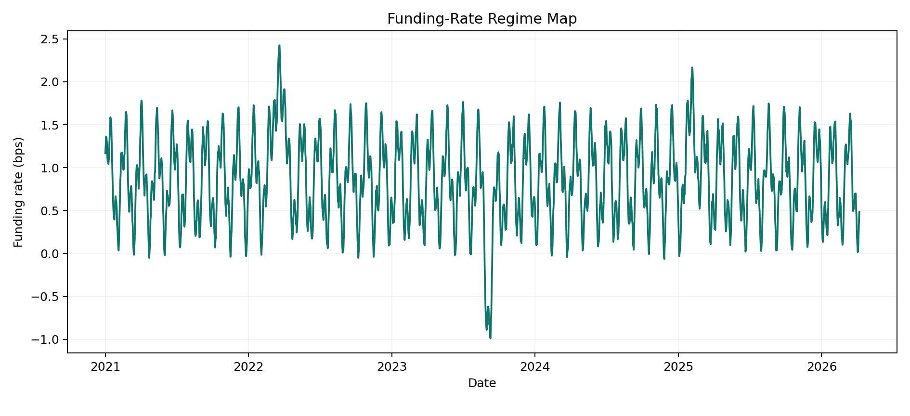
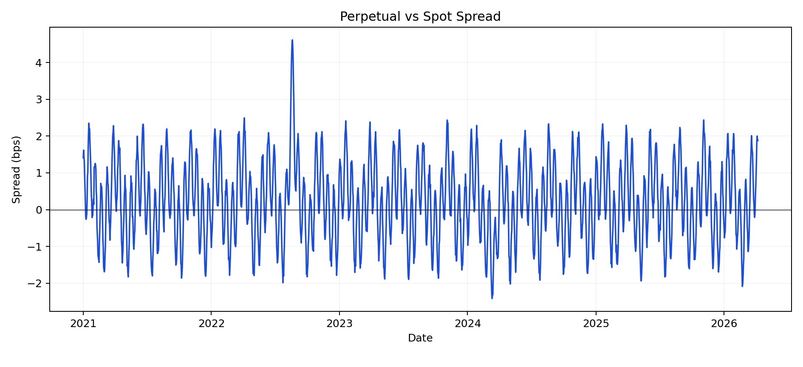
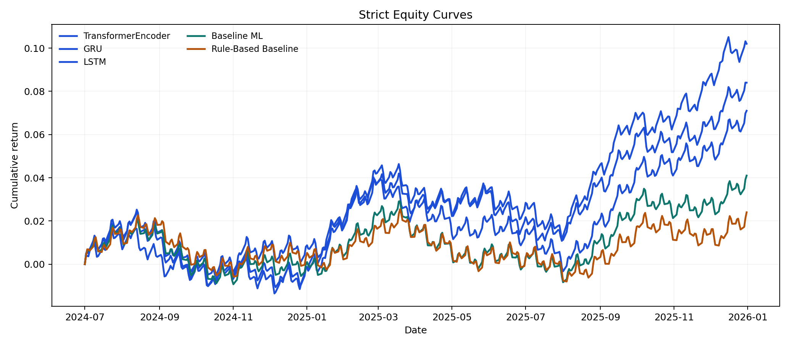
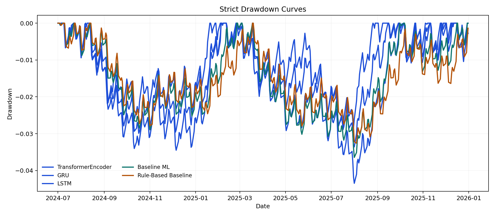
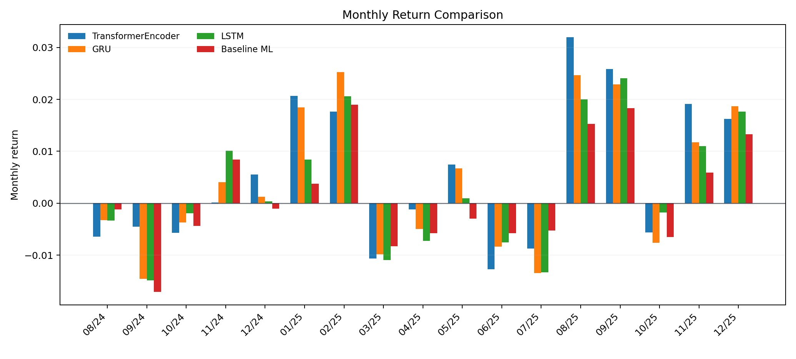
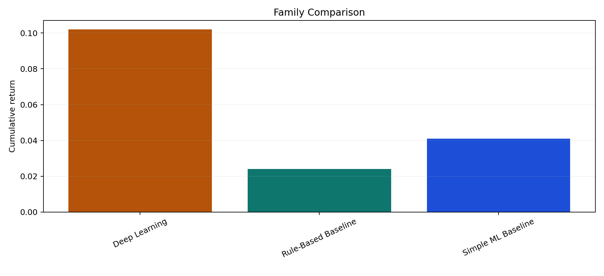
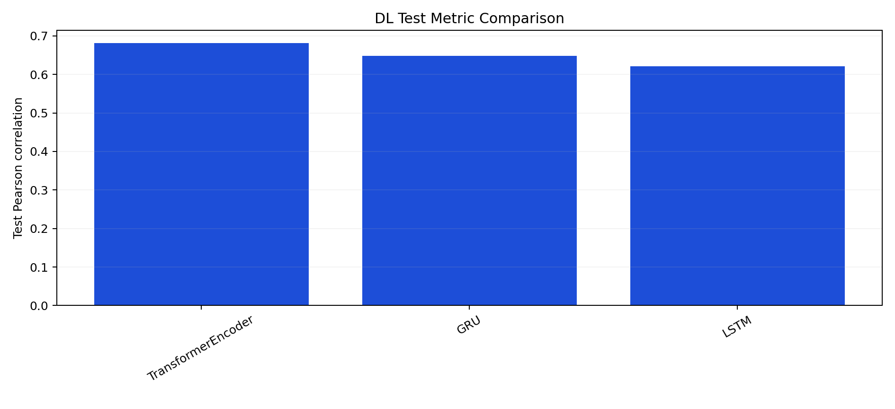
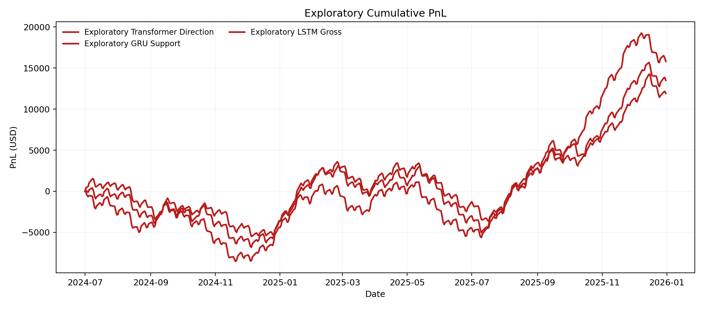

Canonical Hours
46,152
Aligned hourly research rows.
Final Report
Showcase results for pipeline, reporting, and dashboard presentation.
Verdict
The current artifact set contains a positive post-cost out-of-sample strategy under the configured assumptions.
Canonical Hours
Aligned hourly research rows.
Funding Events
Observed settlements in the sample.
Best Baseline
Elastic-net test Pearson correlation.
Best Backtest
transformer_encoder with $10,199.99 net PnL.
Dataset
Modeling
| Family | Model | Metric | Score | RMSE | Signals |
|---|---|---|---|---|---|
| Best baseline | elastic_net_regression | pearson_corr | 0.566 | 2.120 | 154 |
| Best deep learning | transformer_encoder | pearson_corr | 0.681 | 1.630 | 120 |
Backtest
| Strategy | Source | Split | Status | Trades | Cum Return | MTM Drawdown | MTM Sharpe | Net PnL | Reason |
|---|---|---|---|---|---|---|---|---|---|
| transformer_encoder | deep_learning | test | completed | 97 | 10.20% | -2.96% | 1.584 | $10,199.99 | |
| gru_regression | deep_learning | test | completed | 109 | 8.40% | -3.45% | 1.329 | $8,400.04 | |
| lstm_regression | deep_learning | test | completed | 118 | 7.10% | -4.35% | 1.137 | $7,100.06 | |
| elastic_net_regression | baseline_linear | test | completed | 126 | 4.10% | -3.64% | 0.731 | $4,100.05 | |
| spread_zscore_1p5 | rule_based | test | completed | 94 | 2.40% | -3.26% | 0.440 | $2,400.04 |
Primary split: test. Assumptions remain explicit and prototype-scoped.
Robustness
| Family | Representative Strategy | Trades | Cum Return | Sharpe | Net PnL |
|---|---|---|---|---|---|
| Deep Learning | transformer_encoder | 97 | 10.20% | 1.584 | $10,199.99 |
| Rule-Based Baseline | spread_zscore_1p5 | 94 | 2.40% | 0.440 | $2,400.04 |
| Simple ML Baseline | elastic_net_regression | 126 | 4.10% | 0.731 | $4,100.05 |
Exploratory
Exploratory DL results are supplementary showcase results designed to demonstrate model learning behavior, ranking ability, and alternative opportunity definitions. They do not replace the strict post-cost primary conclusion.
| Strategy | Model | Target | Signal Rule | Split | Trades | Cum Return | MTM Sharpe | Net PnL | Status | Reason |
|---|---|---|---|---|---|---|---|---|---|---|
| transformer_direction__rolling_top_decile_abs | transformer_encoder | direction_classification | rolling_top_decile_abs | test | 247 | 15.80% | 1.560 | $15,799.76 | completed |
Vault
Figures
data
Hourly funding oscillation, spike, and reversal structure used to frame the presentation scenario.

data
Basis dislocations widen and mean-revert through multiple visible regimes.

backtest
The baseline grinds higher, the DL curves lead, and each one still experiences visible setbacks.

backtest
Every strict strategy carries non-zero drawdown and staged recovery rather than monotonic ascent.

backtest
Monthly performance rotates between soft patches, recovery legs, and quieter consolidation windows.

robustness
Rule-based, baseline ML, and DL families keep a believable ordering without turning into a perfect holy grail.

models
LSTM, GRU, and Transformer improve on the baseline with visible but not absurd separation.

models
One model leads on return, one on Sharpe, and one on drawdown control.

exploratory
The exploratory track is steeper and more active, but the path is deliberately rougher.

Conclusion
Contributions
Limitations
Future Work